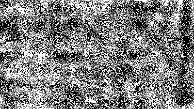

About
William Ford Gibson (born March 17, 1948) is an American-Canadian speculative fiction writer and essayist widely credited with pioneering the science fiction subgenre known as cyberpunk. Beginning his writing career in the late 1970s, his early works were noir, near-future stories that explored the effects of technology, cybernetics, and computer networks on humans—a "combination of lowlife and high tech"—and helped to create an iconography for the information age before the ubiquity of the Internet in the 1990s. Gibson notably coined the term "cyberspace" for "widespread, interconnected digital technology" in his short story "Burning Chrome" (1982), and later popularized the concept in his acclaimed debut novel Neuromancer (1984). These early works of Gibson's have been credited with "renovating" science fiction literature in the 1980s.
Sprawl Trilogy
The Sprawl trilogy (also known as the Neuromancer, Cyberspace, or Matrix trilogy) is William Gibson's first set of novels, composed of Neuromancer (1984), Count Zero (1986), and Mona Lisa Overdrive (1988).
The novels are all set in the same fictional future, and are subtly interlinked by shared characters and themes (which are not always readily apparent). The Sprawl trilogy shares this setting with Gibson's short stories "Johnny Mnemonic", "New Rose Hotel", and "Burning Chrome", and events and characters from the stories appear in or are mentioned at points in the trilogy.
Neuromancer
"Before the Internet was commonplace, William Gibson showed us the Matrix—a world within the world, the representation of every byte of data in cyberspace. Henry Dorsett Case was the sharpest data-thief in the Matrix, until an ex-employer crippled his nervous system. Now a new employer has recruited him for a last-chance run against an unthinkably powerful artificial intelligence. With a mirror-eyed girl street-samurai riding shotgun, he’s ready for the silicon-quick, bleakly prophetic adventure that upped the ante on an entire genre of fiction."
Count Zero
"A corporate mercenary wakes in a reconstructed body, a beautiful woman by his side. Then Hosaka Corporation reactivates him, for a mission more dangerous than the one he’s recovering from: to get a defecting chief of R&D—and the biochip he’s perfected—out intact. But this proves to be of supreme interest to certain other parties—some of whom aren’t remotely human..."
Mona Lisa Overdrive
"Enter Gibson's unique world—lyric and mechanical, sensual and violent, sobering and exciting—where multinational corporations and high tech outlaws vie for power, traveling into the computer-generated universe known as cyberspace. Into this world comes Mona, a young girl with a murky past and an uncertain future whose life is on a collision course with internationally famous Sense/Net star Angie Mitchell. Since childhood, Angie has been able to tap into cyberspace without a computer. Now, from inside cyberspace, a kidnapping plot is masterminded by a phantom entity who has plans for Mona, Angie, and all humanity, plans that cannot be controlled . . . or even known. And behind the intrigue lurks the shadowy Yazuka, the powerful Japanese underworld, whose leaders ruthlessly manipulate people and events to suit their own purposes . . . or so they think."
Bridge Trilogy
The Bridge trilogy comprises the novels Virtual Light (1993), Idoru, (1996) and All Tomorrow's Parties (1999). A short story, "Skinner's Room", was originally composed for Visionary San Francisco, a 1990 museum exhibition exploring the future of San Francisco.
Virtual Light

"The millennium has come and gone, leaving in its wake only stunned survivors. In Los Angeles, Berry Rydell is a former armed-response rentacop now working for a bounty hunter. Chevette Washington is a bicycle messenger turned pickpocket who impulsively snatches a pair of innocent-looking sunglasses. But these are no ordinary shades. What you can see through these high-tech specs can make you rich—or get you killed. Now Berry and Chevette are on the run, zeroing in on the digitalized heart of DatAmerica, where pure information is the greatest high. And a mind can be a terrible thing to crash..."
Idoru
"21st century Tokyo, after the millennial quake. Neon rain. Light everywhere blowing under any door you might try to close. Where the New Buildings, the largest in the world, erect themselves unaided, their slow rippling movements like the contractions of a sea-creature...
Colin Laney is here looking for work. He is an intuitive fisher for patterns of information, the “signature” an individual creates simply by going about the business of living. But Laney knows how to sift for the dangerous bits. Which makes him useful—to certain people.
Chia McKenzie is here on a rescue mission. She’s fourteen. Her idol is the singer Rez, of the band Lo/Rez. When the Seattle chapter of the Lo/Rez fan club decided that he might be in trouble in Tokyo, they sent Chia to check it out.
Rei Toei is the idoru—the beautiful, entirely virtual media star adored by all Japan. Rez has declared that he will marry her. This is the rumor that has brought Chia to Tokyo. True or not, the idoru and the powerful interests surrounding her are enough to put all their lives in danger..."
All Tomorrow's Parties
"Colin Laney, sensitive to patterns of information like no one else on earth, currently resides in a cardboard box in Tokyo. His body shakes with fever dreams, but his mind roams free as always, and he knows something is about to happen. Not in Tokyo; he will not see this thing himself. Something is about to happen in San Francisco.
The mists make it easy to hide, if hiding is what you want, and even at the best of times reality there seems to shift. A gray man moves elegantly through the mists, leaving bodies in his wake, so that a tide of absences alerts Laney to his presence. A boy named Silencio does not speak, but flies through webs of cyber-information in search of the one object that has seized his imagination. And Rei Toi, the Japanese Idoru, continues her study of all things human. She herself is not human, not quite, but she’s working on it. And in the mists of San Francisco, at this rare moment in history, who is to say what is or is not impossible..."
Blue Ant Trilogy
Following the turn of the century and the events of 9/11, Gibson emerged with a string of increasingly realist novels—Pattern Recognition (2003), Spook Country (2007), and Zero History (2010)—set in a roughly contemporary world. These works saw his name reach mainstream bestseller lists for the first time.
Pattern Recognition
"Cayce Pollard is a new kind of prophet—a world-renowned “coolhunter” who predicts the hottest trends. While in London to evaluate the redesign of a famous corporate logo, she’s offered a different assignment: find the creator of the obscure, enigmatic video clips being uploaded to the internet—footage that is generating massive underground buzz worldwide.
Still haunted by the memory of her missing father—a Cold War security guru who disappeared in downtown Manhattan on the morning of September 11, 2001—Cayce is soon traveling through parallel universes of marketing, globalization, and terror, heading always for the still point where the three converge. From London to Tokyo to Moscow, she follows the implications of a secret as disturbing—and compelling—as the twenty-first century promises to be..."
Spook Country
"spook (spo͞ok) n.: A specter; a ghost. Slang for “intelligence agent.”
country (ˈkən-trē) n.: In the mind or in reality. The World. The United States of America, New Improved Edition. What lies before you. What lies behind.
spook country (spo͞ok ˈkən-trē) n.: The place where we all have landed, few by choice. The place we are learning to live.
Hollis Henry is a journalist, on investigative assignment for a magazine called Node, which doesn’t exist yet. Bobby Chombo apparently does exist, as a producer. But in his day job, Bobby is a troubleshooter for military navigation equipment. He refuses to sleep in the same place twice. He meets no one. And Hollis Henry has been told to find him..."
Zero History
"Hollis Henry never intended to work for global marketing magnate Hubertus Bigend again. But now she’s broke, and Bigend has just the thing to get her back in the game...
Milgrim can disappear in almost any setting, and his Russian is perfectly idiomatic—so much so that he spoke it with his therapist in the secret Swiss clinic where Bigend paid for him to be cured of his addiction...
Garreth doesn't owe Bigend a thing. But he does have friends from whom he can call in the kinds of favors powerful people need when things go sideways...
They all have something Bigend wants as he finds himself outmaneuvered and adrift, after a Department of Defense contract for combat-wear turns out to be the gateway drug for arms dealers so shadowy they can out-Bigend Bigend himself."
More Info
For the latest information on William Gibson, visit the official William Gibson website.
Attribution
This page uses material from the Wikipedia articles listed below, all of which have been released under the Creative Commons Attribution-Share-Alike License 3.0:
The book synopses provided above are copyright of the publisher, Penguin Random House.